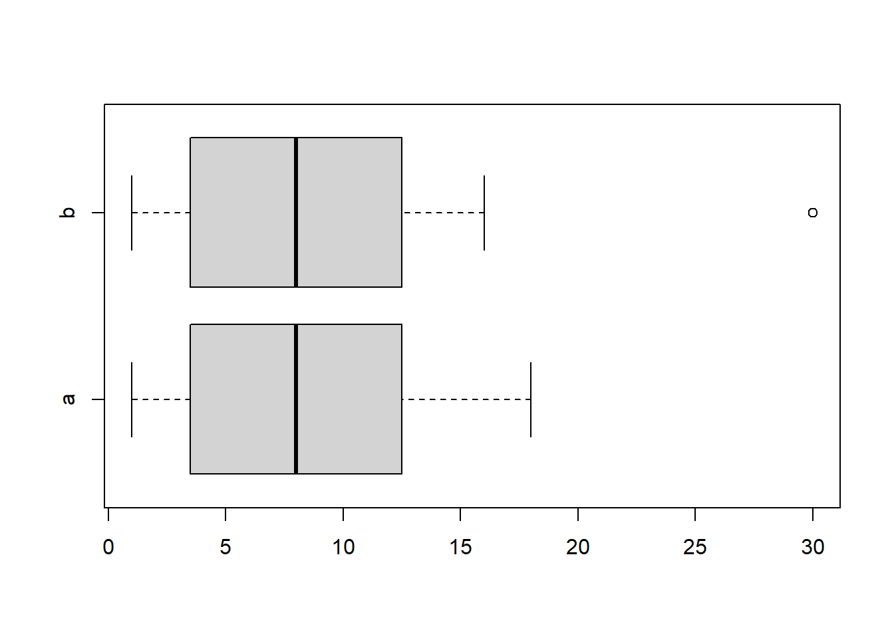
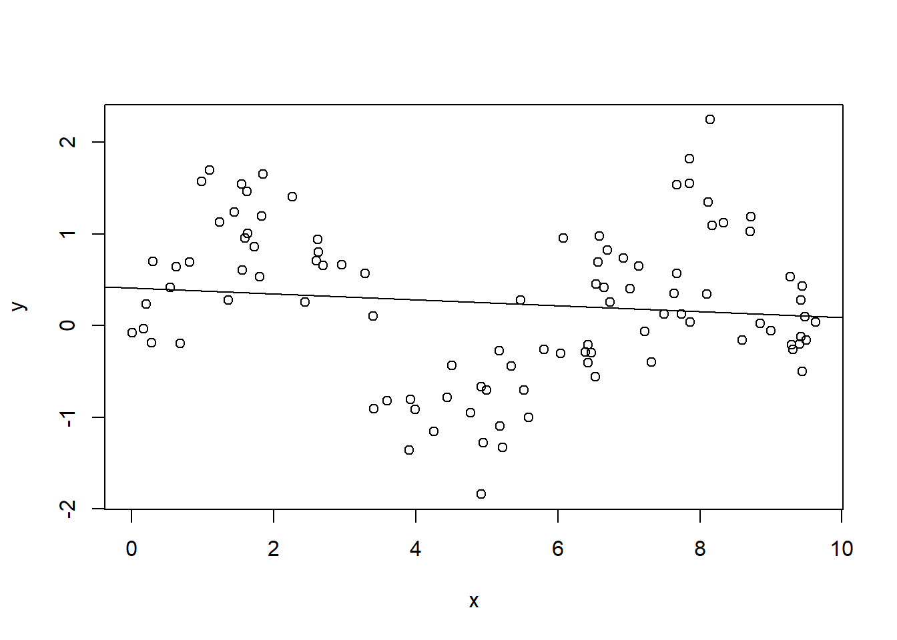
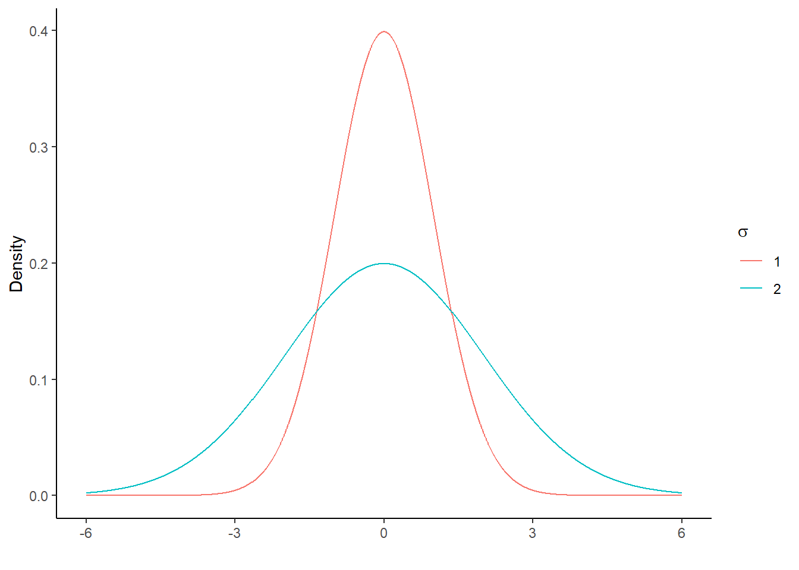
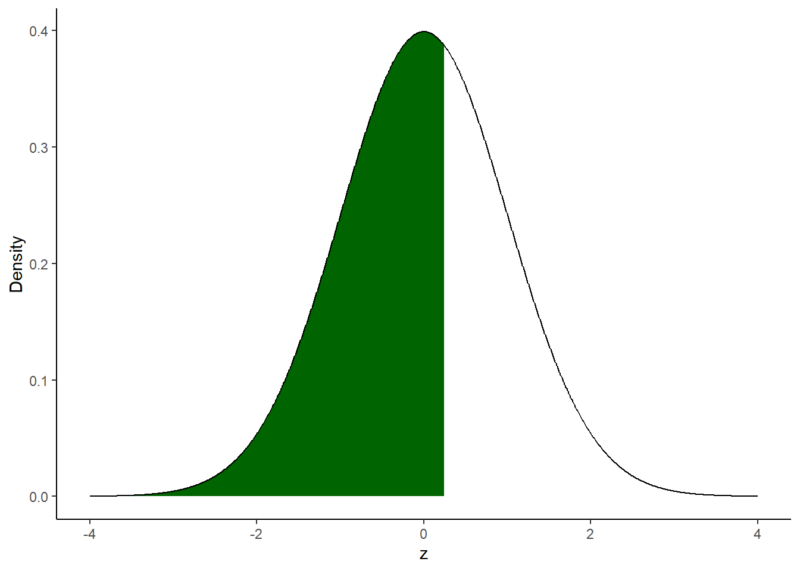

Chapter 6 Introduction to statistical inference
The basics of hypothesis testing27
In descriptive statistics, we work with a sample of data obtained from a larger population and we are interested in understanding the characteristics of the sample. In inferential statistics, we use the sample to try to obtain conclusions (more precisely said, to make inference) regarding the characteristics of the population from which the sample is obtained. For example, having a sample available we might be interested in inferring whether the sample mean (sample statistics, \(\bar{x}\)) is representative of the population mean (population parameter, \(\mu\)). That is, we are interested in generalising the information obtained from the sample to the entire population. Of course it is easy to imagine that our conclusion will be subject to error as we only have one sample available. With only one sample available, it is very unlikely that the sample mean will be identical to the population mean. So in our inference process we have to take this sampling error into account.
Hypothesis testing is a widely used statistical procedure for making inference from a sample to a population.28 The test starts with two statements. The null hypothesis, denoted \(H_0\). The null hypothesis describes the condition that is assumed to be true at the time. It is often compared to the situation in court where an accused person is assumed to be innocent until there is enough evidence to find him guilty. The second statement is the alternative hypothesis, denote \(H_1\). The null hypothesis and the alternative hypothesis are mutually exclusive. The alternative hypothesis is the one that is favoured if enough evidence is found. Many times we have a theory that suggests which values to specify for the null hypothesis and the alternative hypothesis. Hypothesis testing is a means of testing the statistical (not practical) validity of our theory.
\[H_0: \mu = \mu_0\]
\[H_1: \mu \neq \mu_0\]
How do we decide between the null hypothesis and the alternative hypothesis? We assume that we have a normally distributed random variable \(X\) with mean \(\mu\) and standard deviation \(\sigma\). Let us further assume that the population mean \(\mu\) (which we do not know) is a value equal to \(\mu_0\) (maybe because theory or experience tells us so). In a first sample obtained from our random variable \(X\), we compute the mean (\(\bar{x}\)) and obtain a value close to the hypothesized value \(\mu_0\). Since we know that data are obtained from a normally distributed \(X\), we know that the probability of obtaining a value close to the mean is actually quite high. In a second sample, a much larger value of \(\bar{x}\) is obtained. In this case, we know that obtaining values much larger than the mean is less probable (in other words, we are in the tales of the distribution). What should we conclude with such a high value now? Does the sample results confirm or contradict the null hypothesis, i.e. the hypothesized value for the mean of the population? We can continue to believe that the null hypothesis is correct and that we have just an unlucky sample from which we have obtained a very high mean but we are somehow convinced that the hypothesized value is still correct (\(H_0: \mu = \mu_0\)) and the sample was just a bit off. Or we can convince ourselves that the sample result contradicts the assumed value \(\mu_0\) and that we were wrong with the null hypothesis (therefore, \(H_1: \mu \neq \mu_0\)). In the rule, the null hypothesis is rejected if the probability of obtaining such an extreme value is smaller than an arbitrarily defined probability.
There are two kinds of mistakes that can be made. A Type I error and a Type II error. When we reject a hypothesis that is actually true, we are committing a Type I error. When we are not rejecting (or “accepting”, but this is not the right terminology) a hypothesis that should be rejected, we are committing a Type II error. Since we are basing our decision on a sample, and there is always uncertainty in the sampling process, we are more or less sure that there is some uncertainty attached to our test conclusion. In hypothesis testing we decide in advance what kind of error we want to make. The procedure is to decide in advance to commit to a certain Type I error, e.g. we decide in advance to tolerate a Type I error in 5% of the cases. This value is called significance level and is traditionally indicated with the greek letter \(\alpha\).29
Example
The mean lifetime of a sample of 100 light bulbs is computed to be 1570 hours with a standard deviation of 120 hours. If \(\mu\) is the mean lifetime of all the light bulbs produced, test the hypothesis that the population mean is \(\mu = 1600\) hours against the alternative that \(\mu \neq 1600\) using a significance level of 5%. Find the p-value of the test and build a 95% confidence interval.
\[H_0: \mu = 1600\]
\[H_1: \mu \neq \space 1600\]
We need to construct our test statistic to perform the test. In practice, wee need to transform the computed mean obtained from the sample of light bulbs into a statistic that follow a standard normal distribution with zero mean and unit variance.
\[z_{test} = \frac{\bar{x} - \mu}{\frac{\sigma}{\sqrt{n}}} = \frac{1570 - 1600}{12} = -2.5\]
n <- 100
sample_mean <- 1570
sample_sigma <- 120
mu <- 1600
alpha5p <- 0.05
z_test <- abs((sample_mean - mu) / (sample_sigma / sqrt(n)))
z_test## [1] 2.5z_crit_5p <- qnorm(alpha5p/2, mean = 0, sd = 1, lower.tail = FALSE)Since in this exercise we are interested in performing a two-sided test (look a the formulation of the null and alternative hypothesis), we take the absolute value of our \(z\) test. We can reject \(H_0\) at the 5% significance level (\(\alpha\) = 5%) if,
\[|z_{test}| > z_{crit}\]
z_test > z_crit_5p## [1] TRUEWe can reject \(H_0\) at the 5% significance level. In the following graph, in green we can see the rejection region (the two green shaded areas add up to 5%) while with the yellow line it is indicated the value of our \(z\) test in both tails of the distribution. As we said, since the value of our \(z\) test falls within the rejection region, we can reject \(H_0\) at the 5% significance level.

What do we see highlighted in black in the graph above? The sum of the two black areas represent our p-value for the z score that we have just calculated. We can think of the p-value as the smallest significance level at which we still reject the null hypothesis (or the largest significance level at which the null hypothesis cannot be rejected). How large is the p-value for our z test?
pvalue <- pnorm(z_test, mean = 0, sd = 1, lower.tail = FALSE) * 2
pvalue*100## [1] 1.241933How can we interpret the p-value? In our exercise, the p-value of 1.24% represents the probability that a mean lifetime of less than 1570 or more than 1630 hours would occur by chance if \(H_0\) were actually true. A rather small probability. How did we obtain the values 1570 and 1630? We have used (half) of the p-value to calculate the quantiles of a normal distribution with mean \(mu = 1600\) and standard deviation \(120/\sqrt{100}\).
qnorm(pvalue/2, mean = mu, sd = (sample_sigma / sqrt(n)), lower.tail = FALSE) ## [1] 1630qnorm(pvalue/2, mean = mu, sd = (sample_sigma / sqrt(n)), lower.tail = TRUE)## [1] 1570(pnorm(1570, mean = mu, sd = (sample_sigma / sqrt(n)), lower.tail = TRUE) +
pnorm(1630, mean = mu, sd = (sample_sigma / sqrt(n)), lower.tail = FALSE)) * 100## [1] 1.241933Since we see that the p-value is larger than 1%, we already know that we will fail to reject the null hypothesis at the 1% significance level (\(\alpha\) = 1%) . Shouldn’t we have used a t test rather than a \(z\) test as suggested by professional statisticians? Probably yes. Since we do not know the population standard deviation (the standard deviation of all light bulbs), a t test sounds more appropriate. However, since our sample is relatively large (\(n = 100\)), much larger than the commonly suggested rule of thumb (\(n > 30\)), we will practically obtain (almost) the same result using the normal distribution and the t distribution.30 To conclude, we need to construct the 95% confidence interval (\(100 - \alpha\), where \(\alpha\) = 5%).
\[(\bar{x} + z_{\alpha / 2} \cdot \frac{\sigma}{\sqrt{n}}; \bar{x} + z_{1 - \alpha / 2} \cdot \frac{\sigma}{\sqrt{n}})\]
We must be careful with the signs in the formula above. Once we look up the critical value \(z_{\alpha / 2}\) (or we compute it using R) we will see that the quantity is actually negative. If we include the negative sign in the formula for the confidence interval, it would not be wrong, but it can create some confusion. This is why it is better to use the formula below. In this case, we have to include the negative sign in the formula because \(z_{1 - \alpha / 2}\) is going to be a positive number and this is the version that we are going to implement in R.
\[(\bar{x} - z_{1 - \alpha / 2} \cdot \frac{\sigma}{\sqrt{n}}; \bar{x} + z_{1 - \alpha / 2} \cdot \frac{\sigma}{\sqrt{n}})\]
sample_mean + c(-1, +1) * z_crit_5p * (sample_sigma / sqrt(n)) ## [1] 1546.48 1593.52The hypothesized value for the mean lifetime of all the bulbs produced was 1600 working hours. Since this particular value falls outside the confidence interval constructed around the sample mean, we can reject \(H_0\). With the confidence interval test the null hypothesis is rejected if and only if the hypothesized value falls outside the confidence interval. The \(z\) test (or \(t\) test) and the confidence interval test are basically an elaboration of one another and provides always the same test decision.31
6.1 The normal distribution32
The normal distribution is a common probability distribution in statistics and econometrics (it is just one of many distributions). The normal distribution fits a number of natural and social phenomena. When a phenomenon (a random variable) has a normal distribution, its probability density function (for short, PDF) assumes the well-known bell-shaped curve. The normal distribution is sometimes called the Gaussian distribution or the Gauss curve in honor of the famous mathematician Carl-Friedrich Gauss.33 Shape and position of the normal distribution are entirely determined by mean (\(\mu\)) and standard deviation (\(\sigma\)) of the normally distributed random variable. This is written as:
\[X \sim Normal(\mu, \sigma)\]
For example, we see that the two normal distributions shown in the following graph have the same mean but different standard deviations.

The mean determines the location of the normal distribution in the horizontal axis. The majority of the body is located around the mean to which correspond the peak in the distribution. The standard deviation determines the shape of the curve. In practice, it determines how far the values of the variable are from the mean. This means that a higher mean shifts the curve to the right without changing its shape. Similarly, a higher standard deviation widens the body of the curve without shifting its position on the horizontal axis.
The normal distribution has a number of interesting and useful properties. First of all, it is symmetrical with respect to the mean, from which it follows that half of the values are distributed half to the right and half to the left of the mean. Knowing the mean and standard deviation of a certain event or random variable, the normal distribution allows us to calculate the probability that the event will assume a certain value or range of values. Roughly speaking, this correspond to the area below the curve. In reality, this is done using the cumulative distribution function (CDF) which is nothing more than the integral of the PDF. The following figure shows the relationship between PDF (left) and CDF (right) of a normally distributed random variable with mean 0 and standard deviation 1.

6.2 The standard normal distribution
A special case of normal distribution is the standard normal distribution where the mean is equal to 0 and the standard deviation is equal to 1 (this is actually what we used in the previous exercise but we had not yet used this term). Let us now see how it is possible to “standardise a variable”. This is a very important procedure that we will see again later when we talk about hypothesis testing. In the following section we will instead use it to calculate the so-called \(z\) scores.
\[Z = \frac{X - \mu}{\sigma}\]
Rewriting \(Z\) as \(aX + b\), where \(a = (1/\sigma)\) and \(b = -(\mu/\sigma)\) and using the properties of expectation and variance we can see that:
\[E(Z) = aE(X) + b = (\mu/\sigma) - (\mu/\sigma) = 0\]
\[Var(Z) = a^2Var(X) = (\sigma^2/\sigma^2) = 1\]
What does that mean? It means that if we subtract the mean from a variable (\(X\)) and divide it by the standard deviation we will have a standardised variable (\(Z\)) that has a mean of zero and standard deviation of 1.
Exercises
- We are given the following set of numbers: \(6, 2 , 8, 7, 5\). Transform the set into standard scores and check that mean and standard deviation of the transformed set are respectively 0 and 1.
x <- c(6, 2 , 8, 7, 5)
mean_x <- mean(x)
sd_x <- sd(x)
z <- (x - mean_x)/sd_x
mean(z)## [1] 1.387779e-16sd(z)## [1] 1- Let us assume that the random variable \(X\) is a normally distributed random variable with mean (\(\mu\)) equal to 5 and population standard deviation (\(\sigma\)) equal to 4. In short, \(Normal ~ (5,4)\). Calculate the probabilities that our random variable \(X\) assume a value smaller than 6, \(P(X \leq 6)\), using the table of the standard normal probabilities or R (much better!).
If we did not have R available we would have to find the \(z\) score corresponding to the value of interest, 6 in this case, and look in the table of standard normal probabilities (the area below the curve) the probability that our random variable assumes a value smaller than that.34
mu_x <- 5
sigma_x <- 4
z <- (6 - mu_x) / sigma_x
z ## [1] 0.25\[z = \frac{6 - 5}{4} = 0.25\]
Our \(z\) value of interest is 0.25. The probability that the variable \(X\) takes on a value less than 6 is given by the area under the normal curve to the left of \(z = 0.25\). This value is equal to:
pnorm(z, mean = 0, sd = 1, lower.tail = TRUE)*100## [1] 59.87063We can achieve the same result by using the lower.tail = FALSE option. In this case we get the white area in the graph below and will have to subtract this quantity from 1 or 100%, i.e. the whole area under the curve.
100 - pnorm(z, mean = 0, sd = 1, lower.tail = FALSE)*100## [1] 59.87063In the graph below, the area marked in green indicates the probability that the independent variable \(X\) takes on a value less than 6 given mean and population standard deviation of 5 and 4, respectively.

If we have software at our disposal we do not have to use tables. In this case there is no need to calculate the \(z\) score. The result (and the graph) will be exactly the same with the important difference that now the values reported in the horizontal axis will be the values of \(X\) and not the standardized scores.
## [1] 59.87063
The test scores for a class of students (this is the population) are normally distributed with mean (\(\mu\)) equal to 75 points and standard deviation (\(\sigma\)) equal to 10 points. What is the probability that a students scores above 80 points?
Calculate the following probabilities:
- Given \(X \sim Normal(3,4)\), find \(P(X \leq 1)\)
- Given \(X \sim Normal(4,0)\), find \(P(2 < X \leq 6)\)
The discussion presented here is based on Wooldridge, J. Introductory Econometrics: A Modern Approach (Chapter 4 and Appendix C) and Dougherty, C. Introduction to Econometrics (Review chapter).↩︎
This procedure is part of the branch of statistics called parametric statistics. In fact, it is assumed that the population from which the sample is obtained follows some kind of distribution (\(t\) distribution, normal distribution, \(F\) distribution) to which reference will be made to compare the plausibility of the sample statistics. Another branch of statistics is called non-parametric and does not assume any kind of distribution.↩︎
Again, \(\alpha\) is the probability of rejecting a true null hypothesis. Traditionally in econometrics, we use three levels of significance 10%, 5% and 1%.↩︎
For common misunderstandings about the confidence interval, see here.↩︎
The discussion presented here and in particular the proof of mean and standard deviation of the the standardized random variable rely on Wooldridge, J. Introductory Econometrics: A Modern Approach (Appendix C).↩︎
At first glance, many phenomena do not appear to follow a normal distribution. However, after a logarithmic transformation they assume a (log)normal distribution.↩︎
Since the normal distribution is continuous, \(P(Z < z) = P(Z \leq z)\).↩︎